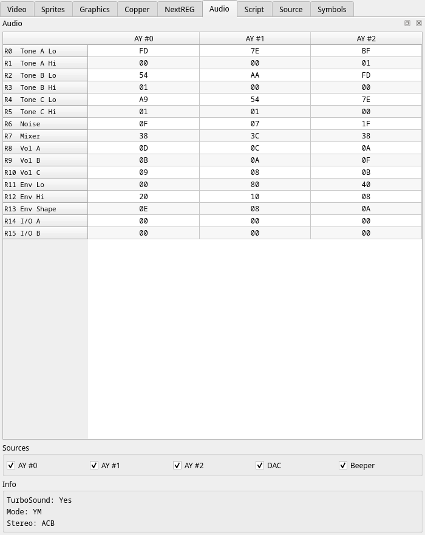

Audio¶

The Sources strip at the top lets you mute each AY chip, the DAC and the beeper independently, whichever tab is showing; a checked box is audible. This is a debugging aid on the output stage only: the Z80 cannot observe it, and it is not part of a saved state or a rewind slot, so muting a chip to work out which one is making a noise does not change the program's behaviour.
Each channel also has its own M (mute) and S (solo) buttons, described under Mute and solo below.
Below it are five tabs: Chips, DAC & Beeper, Log, Tracker and Scopes.
Chips¶
The header reports whether TurboSound is enabled, whether the chips are in AY or YM mode, whether the stereo layout is ABC or ACB, the PSG mode set in NextREG 0x06 (YM, AY, YM ZXN-8950, or held in reset) and whether the AY ports are open. The last line counts the AY writes the machine discarded; click show to jump to the table that says why (see DAC & Beeper below).
Each of the three chips has a block of its own:
- the chip header: ACTIVE marks the chip the AY ports reach, then the
register address latch (
0x00to0x1F; with bit 4 set the writes are ignored, as on the hardware), the pan (L R,L -,- R,- -), whether the chip is mono, and whether it reaches the mix; - one row per channel: the tone period, the note and the cents off it, T
and N (lit when the mixer register enables the tone or the noise on that
channel), the volume or
Envwhen the channel follows the envelope, and a level bar; - the noise period, the envelope shape drawn as four characters (
\___,/___,\\\\,\/\/,\''',////,/''',/\/\), the envelope period, its note (only for the shapes that repeat: 8, 10, 12 and 14) and the current step with its direction (31 falling,0 rising,31 holding).
Notes are named at the PSG clock the emulated machine runs at, 1.75 MHz on a Next. A tuning table made for the 128K Spectrum (1.7734 MHz) therefore plays about 23 cents flat here, and the panel shows that. The level bar is the level the channel plays when its tone or noise gate is open, so it does not flicker with the square wave. Every write to register 13 restarts the envelope, so the step shown right after one is the start of the new shape.
The Hex box swaps the decoded view for the raw table: all 16 registers of the three chips side by side, named.
Recording a .psg¶
The row at the top of the Chips tab records what the program writes to the AY chips
as .psg files. Record PSG... asks for a file name and starts; the label beside
the buttons reads Recording PSG (with the file name as its tooltip) until Stop
ends it. From the command line the same recording is --psg-record FILE, and the
two give the same bytes. A recording that is running when JNEXT exits is finished
like any other capture.
- The file holds the layout Fuse writes for its AY log: a header, then for each frame in which the program wrote any of the registers R0 to R13 the register and value pairs in register order, with a separator for every frame in between. R14 and R15 (the I/O ports) are not recorded.
- One file per chip. The first chip's file is the name you gave. The second
and third chips go to the same name with
-ay1or-ay2before the extension (tune.psggivestune-ay1.psg), and a file is created only if that chip is written. The files are aligned to the start of the recording, so they stay in step if you play them together. - Last write wins. When a program writes the same register more than once in a frame, the file keeps the last value, the one the chip ended the frame with. Fuse keeps the first. That is one difference in what the two emulators record for the same writes; where the files start, and the frame a write falls in, can differ too.
- Resets, rewinds and state loads never take the file back in time. A reset or a load keeps the time that passed: the silent frames before it stay in the file, and a soft or hard reset splits the frame it happens in. A rewind keeps what was already written and carries on after it (the frames a rewind replays are not recorded again).
- The recording does not depend on the Log tab: it works with the log off, and stopping the log does not stop it. Like the mute buttons it is invisible to the program being debugged and is not part of a saved state.
What is inside. The file is the 16-byte header (PSG, 0x1A, twelve zero bytes) and
then a stream of bytes. A byte from 0x00 to 0x0D is a register number and the next
byte its value. 0xFF ends one frame (a player waits one frame) and 0xFE n ends 4 * n frames. Every
frame that holds a write is the register and value pairs in register order, after the
separators for the frames that passed since the previous one: two frames in a row that
both write are one 0xFF apart, and k silent frames between them show as k + 1
frames of separators. When the recording stops, the frames up to that moment are added
as separators, so a file that ends in silence plays the silence.
Playing it. Open the file in an AY player that reads the PSG format and play it as you would any tune. A few things follow from what the file is:
- It holds register values and frame counts, not a time base or a chip clock. A frame is one video frame of the emulated machine, and a player plays frames at its own rate, normally 50 Hz: a recording of a machine running at 60 Hz timing plays slower than it ran.
- It sounds at the player's chip clock. A player set to the 128K Spectrum's 1.7734 MHz is about 23 cents higher than JNEXT's 1.75 MHz (the same difference described under Chips).
- A player plays one chip. With TurboSound, open each chip's file in turn; they start at the same frame, so a player that can mix files plays them in step.
- It records the program's writes to the registers, not the output, so it carries nothing of the DAC, the beeper, muting or the stereo layout.
The Chips tab is refreshed every frame while the Audio panel is visible and Chips is the current tab; with another tab current, or the panel hidden behind another one, the panel is refreshed at about 4 Hz with the rest of the window.
DAC & Beeper¶
DAC. The four DAC channels, A to D, each as the byte last written (0x80 is
silence) and a bar over the whole range, so silence sits mid-bar. The line above
says whether the DAC is enabled (NextREG 0x08 bit 3); with it off every channel
reads 0x80.
Port families. One lamp per NextREG 0x84 bit from 1 to 7, lit when that family of ports is open: Soundrive 1 (ports 1F, 0F, 4F, 5F), Soundrive 2 (F1, F3, F9, FB), Profi Covox (3F, 5F), Covox (0F, 4F), Pentagon/ATM (FB), GS Covox (B3) and Specdrum (DF). Pentagon/ATM works only while Soundrive 2 is off, so its lamp is dark while Soundrive 2 is lit even if bit 5 is set.
Beeper. Lamps for EAR and MIC (port 0xFE bits 4 and 3) and for the tape EAR input, then whether the internal speaker is on (NextREG 0x08 bit 4), whether the beeper goes to the speaker only (NextREG 0x06 bit 6), and whether EAR and MIC reach the mix: they do not when both of those are set. A tape playing in real time reaches the mix through the same beeper path, so the Beeper box, and that exclusion, silence it too, as it does the Pi's audio when that is routed to EAR (NextREG 0xA2); the Tape EAR lamp keeps showing the input.
Pi I2S. Lamps for the left and right inputs and whether the Pi's audio goes to EAR (NextREG 0xA2).
DAC channels. Under the DAC values: an M and an S button per channel (see Mute and solo below).
Host. The output, AY, DAC and beeper gains in dB, the sources and channels muted
(from the Sources strip and the M buttons), and whether the emulator is synthesising audio at all (it is not
with --silent).
Dropped writes. A table with one fixed row per reason an audio write is thrown away. Each row shows how many writes were dropped and, for the latest, the port, the value, the PC (only when a program wrote it), the frame and who wrote it: CPU, DMA, Copper or Debugger. What to change for each reason:
- AY ports off: set NextREG 0x84 bit 0.
- AY held in reset: take NextREG 0x06 out of
11. - Chip select, TurboSound off: set NextREG 0x08 bit 1.
- Ignored 0xFFFD value: the value is neither a register select (bits 7:5 clear) nor a chip select.
- Register address 16-31: select a register from 0 to 15 before writing data.
- DAC port family off: set the NextREG 0x84 bit of the family the program writes to. A write to port F1 or F9 with Soundrive 2 off is also passed on to the memory paging port, as on the hardware.
- DAC off: set NextREG 0x08 bit 3.
- DAC mirror, DAC off: the same, for writes to NextREG 0x2C to 0x2E.
A write with the family off and the DAC off is counted as a family drop: the port is not decoded at all. Counts survive a reset, a state load and a hard reset, and are cleared only by Clear. Writes made from the debugger or a script count as Debugger, and stepping back or rewinding does not count the replayed writes again. Double-click a row written by the CPU to show the instruction in the Disassembly.
Pacing (CTC, DMA). What sets the pace of a sample player: one row per CTC channel and one
for the DMA. Mode is timer or, for a channel that counts another's pulses, counter <- CTC n
(channel 0 counts channel 3). Prescaler is 16 or 256 (a timer only), TC the time constant
(1 to 256, a written 0 counting 256), Count the down-counter now, State running or
stopped, Int whether the channel may interrupt. Rate is how often the channel fires:
28 MHz / (prescaler x TC) for a timer, the rate of the channel that clocks it divided by TC for
a counter, - when it does not fire. The DMA row shows its mode (byte, continuous,
burst), the prescaler (- for none), the bytes moved over the block length, the source and
destination (port 0x00DF for an I/O port) and active or idle. Its rate is the prescaler's
nominal rate, 28 MHz / (32 x prescaler); a real transfer is a little slower, because the DMA's
own cycles come on top of the prescaler's wait.
Sample stream. What the program really does to the DAC, measured over the last second:
one row per writer. A CPU writer is one instruction, so a player that writes the DAC from
several places shows several rows; DMA, Copper and debugger writes are one row each. A write to
port 0xDF or NextREG 0x2D is one sample for two channels (Channels A D). Rate is the
samples per second, Min, Avg and Max the time between samples and Jitter its spread
(standard deviation), all in microseconds. Gaps counts the intervals longer than 1.5 times the
median interval: a sample the player skipped. Pacing names the engine whose computed rate is
nearest the measured one and how far off it is, for example CTC 0: 16055.046 Hz (+0.000%); a
player paced by a CTC channel matches that channel's rate to within the interrupt acceptance
jitter. Double-click a CPU row to show the instruction in the Disassembly. The window label
shows how much of the second holds samples: the time from the oldest writer's first
sample to now, up to one second.
While DAC & Beeper is on show the debugger records the audio writes, the same recording as the Log tab, so the rows start when you open the tab.
The DAC & Beeper tab is refreshed at about 4 Hz with the rest of the window.
Log¶
A table of the audio writes the program made, one row per write, newest last. The
machine records them only while this tab, Tracker or DAC & Beeper is the one on show in an open
debugger window (or while something else asks for the log, such as --audio-log); the rows you see
start when you open the tab, and the log holds the newest 65536 writes. The tab is
refreshed with the rest of the window: at about 4 Hz while the machine runs, and when it is paused or stepped.
The columns are the Frame, Line, HC and T-state the write happened at,
the PC of the instruction (only for a write the CPU made), the Source (CPU, DMA,
Copper or Debugger), the Target (AY register, AY select, DAC, DAC mirror or Beeper),
the Chip (the AY chip 0 to 2, or the DAC channel A to D), the Reg (R7 for an
AY register, NR 0x2D for a DAC mirror write), the Value written, the Prev value
it replaced and the Flags.
What is recorded: AY register writes; the TurboSound chip-select and pan commands (written to port 0xFFFD) and any discarded 0xFFFD write; DAC channel writes, one row per channel a write reaches (port 0xB3 gives channels B and C); writes to NextREG 0x2C to 0x2E, which mirror into the DAC; and a change of the beeper's EAR or MIC line. A plain AY register select, a border-only write to port 0xFE and a repeat of the same EAR and MIC levels are not recorded.
The Flags cell reads restart for a write to AY register 13, which restarts the
envelope even when the value does not change, and dropped: with the reason (the same
texts as the Dropped writes table above) for a write the hardware discarded; a dropped
DAC write reached no channel, so its Chip is -.
A marker row reports a break in the log: reset (the machine was reset), state load
(a state was loaded) or rewind (the machine stepped back or rewound). Stepping back
removes the rows from the point you landed on, a reset or an earlier rewind marker among them,
so the log follows the timeline you are now on, and adds a rewind marker. A reset you make
right after a rewind has its own reset row. Markers are shown under every filter.
The filters narrow the rows: the Target, the AY chip, the AY register, the DAC channel
and the Source; Envelope restarts only; and Dropped only. Double-click a row
written by the CPU to show the instruction in the Disassembly. Export CSV... writes
the whole log in the same format as the --audio-log option, described in the manual
page.
Tracker¶
The AY tune one frame per row, newest last, the three chips side by side. Each chip has
the columns Env (the envelope period, hex), Sh (the envelope shape) and, for
channels A, B and C, Note, V (volume) and N (noise), in the order of a
tracker such as Vortex Tracker. The Frame column is the frame the writes were made in,
and Mark says double when a register was written twice in that frame.
A cell is filled only when its register was written in that frame: the note when the tone
period changed (A-4, A#4; ^^^ above the named range; ??? or ?? when the log has
not yet seen one of the registers), the volume when its register was written (E for
envelope volume), the noise period for a channel whose noise is on (-- when it is off),
the envelope period (Env) when R11 or R12 was written and the shape (Sh) when R13 was written. An empty cell
shows --- (Note), . (Sh, V) or dots (Env, N). A cell whose
value changed is highlighted. A run of frames with no AY write is a single row, empty
or empty xN; a break in the log (reset, state load, rewind) is a row of its own, as in
the Log tab.
The Tracker reads the same log as the Log tab: it is recorded only while Log, Tracker or DAC & Beeper is on show, and the log holds the newest 65536 writes. The rows follow the machine at about 4 Hz while it runs and the tab keeps at most 65536 rows.
Double-click a row while the machine is paused to rewind to the start of that frame (this
needs the rewind buffer; the tooltip of a row that cannot be reached says why: running,
an RZX in progress, an empty buffer, a frame outside the buffer, or one from before a
reset or a state load). After the jump the rows from that frame on are removed and a
rewind row is added; they come back as the machine runs again.
Player timing¶
Under the table, the strip shows where in the frame the AY player writes, which is what a music routine's cost looks like from outside: a player that runs from the frame interrupt writes at about the same place every frame, and a frame that writes later than the others is a frame the routine ran late. The numbers are over the last Window frames (1 to 1000, 50 at first; the box is a view control and is not saved):
- the span line says which frames the window covers, how many of them have AY writes and how many have none (a frame the player missed);
- First write and Last write give the line and the T-state, counted from the start of the frame, of the first and last AY write of each frame, as min / avg / max;
- Writes per frame gives the number of AY register writes as min / avg / max, and the range of addresses the CPU wrote from (writes by DMA or by the debugger have no address).
Lines count from the start of the frame, so the frame interrupt itself is on line 1 with the
Next's default timing at 50 Hz (line 0 at 60 Hz, line 0 with 48K timing, the last line with Pentagon timing): a player
that starts at the interrupt writes on line 1 or just after it. A steady player that waits for
the interrupt with HALT can still vary by up to 3 T-states, because the CPU accepts the
interrupt at the end of the HALT instruction.
The line below the numbers describes the selected table row (the last row when none is
selected): the same first and last write, the count and the PC range of that one frame, or
no AY write for a run of empty frames.
The plot has one dot per frame, at the line of the frame's first AY write, scaled to the window's own lines (the earliest at the top, a range of at least 9 lines; its two ends are printed under the plot). A gap is a frame with no AY write. Level dots are a steady player; a dot that drops is a late frame.
Only AY register writes are timed, and the frame the machine is still in is not counted. A
reset or a state load starts the window afresh; a rewind does not. The strip shows when a
routine runs, not what it costs: for the exact cost of a routine read the T-states counter of
the CPU panel between two stops, or run with --profile.
Mute and solo¶
Every one of the 13 channels (the 9 AY channels, 3 per chip, in the Chips tab, and the 4 DAC channels in the DAC & Beeper tab) has an M and an S button. A channel is heard only if both its Sources box and its M allow it: M checked means the channel is muted, and the box and the button are independent switches.
- M mutes or unmutes that channel. The channel keeps running, so unmuting it resumes mid-note; a muted DAC channel reads as the DAC's silent midpoint (0x80), not as zero. A channel that held another value still steps the output to 0x80 at the moment it is muted.
- S solos the channel: the other twelve channels are muted. The Sources strip is left alone, so a source you have switched off stays off (the beeper follows its own box). Clicking S again ends the solo and restores the mutes you had before it. Soloing a second channel moves the solo and still restores the first set of mutes. Any other change to the mutes (an M click, a script, another debugger client) ends the solo, so ending it never undoes that change.
Like the Sources boxes, channel mutes are a listening aid on the output stage only: the Z80 cannot observe them, they survive a reset and a state load, and they are not in a snapshot or a rewind slot. They change what you hear and what is recorded from the mix (a WAV recording or a video capture). The buttons follow the live mutes, so a mute set by a script shows on them.
A script reads and sets the channel mutes with AUDIO_CHANNEL_MUTE: bit 0 to 8
are the AY channels (bit 3 * chip + channel, channel A = 0), bit 9 to 12 are
DAC A to D, and a set bit is a muted channel.
Scopes¶
One oscilloscope trace and one level meter for each of sixteen sources, in this order: the three channels of each AY chip (AY0 A to AY2 C), the four DAC channels (DAC A to D), the Beeper, and the stereo mix (Left and Right). A trace shows the last 20 ms.
What a trace shows is what the source produces, before everything the debugger and the host do to it:
- an AY channel is the chip's own channel output, before the TurboSound routing and the pan, so a chip that is not in the mix still shows what it is generating (the Chips tab says whether it reaches the mix);
- a DAC channel is the byte last written, drawn around its midpoint (
0x80is silence); - the Beeper is EAR and MIC, and is flat while the beeper is excluded from the mix; a tape that is playing (and the Pi's audio when it is routed to EAR) reaches the mix only through the MIC term, as on the hardware, so it shows here as the MIC step;
- Left and Right are the hardware mix, the same sum as the sound output.
Muting a source in the Sources strip or changing a gain does not change a trace: the scopes show the machine, not what you hear.
The trace is edge-triggered: it starts at the latest rising crossing of the middle
of the signal's range that leaves a whole window after it, so a steady tone stands
still. The lamp beside the title reads trig while an edge was found and free
when there was none (a silent or constant source, or a signal that does not rise
through its middle), and the trace then simply shows the newest samples.
The bar is the largest swing of the drawn window from the source's resting level,
as a percentage of the most it can swing; beside it, pk is that swing and rms
the root mean square, in the source's own units (0 to 255 for an AY or DAC channel).
Samples are collected only while this tab is on show, and the scopes redraw on
every frame while the machine runs. While it is collecting, programs that sit in HALT or poll the raster run without the emulator's idle shortcuts. At 28 MHz such programs can need five to eight times the host CPU while Scopes is on show (about twice at 3.5 MHz), so a slow host may not keep real time; it ends when you leave the tab. With --silent the emulator does not
synthesise audio, and the tab says so instead of drawing traces.
Recording stems¶
The row above the traces records the mix as seven WAV files, one per source, so
that you can bring one part of the sound into an editor or a tracker without the
rest. Record stems... asks for a directory (created if it does not exist) and
Stop ends the recording; the label reads Recording stems while it runs, and
Cannot write <directory> or Write error in <directory> when something went
wrong. Files of those names already in the chosen directory are overwritten without asking. The files are 44.1 kHz 16-bit stereo:
| File | What it holds |
|---|---|
ay0.wav, ay1.wav, ay2.wav |
one AY chip after its stereo mode, mono flag and pan; silent while the chip is not in the mix (TurboSound off) |
dac.wav |
the four DAC channels: left is A and B, right is C and D |
beeper.wav |
EAR and MIC; a tape that is playing, and the Pi's audio when it is routed to EAR, are in this file because the Next mixes them as one term |
pi.wav |
the Pi's audio through I2S |
mix.wav |
the hardware mix, what --wav-record writes at 0 dB |
Every file is taken before the host gains, the Sources strip and the mute and solo
buttons, so muting something while you record does not change the files. The six
source files add up to mix.wav: exactly while every source is steady within an
output sample, and otherwise within 3 counts per sample (each of the seven files is
rounded to a whole number on its own, and those roundings are all that can differ).
The same recording from the command line is --wav-record-stems DIR.
Why they add up. The Next's mixer adds its sources into one number, the beeper, the AY chips, the DAC and the Pi, and only then does anything else happen to it. JNEXT cuts that number into its terms at that point, over the same stretch of time that makes one output sample, so the mix is the sum of the parts by construction. A part that rests away from zero (the DAC and the Pi sit mid-scale when silent) has that resting level taken out of its file and the six resting levels add to the mix's own, which is why the files add to the mix instead of to the mix plus an offset. The small difference that can remain is rounding: each file is the exact average of its source rounded to a whole number on its own, and so is the mix.
The recording belongs to the emulator, not to the tab: switching to another tab or
closing the debugger window leaves it running, and a recording started from the
command line shows here with Stop enabled. While it runs, programs that sit in
HALT or poll the raster run without the emulator's idle shortcuts, as with the
traces above. With --silent there is nothing to record and the row is hidden.
Stopping on an audio write¶
To stop the machine on a write to an AY register, a chip select, the DAC or the beeper, add an
Audio Write breakpoint in the Breakpoints panel,
or write a rule with on ay_write or on audio_write.